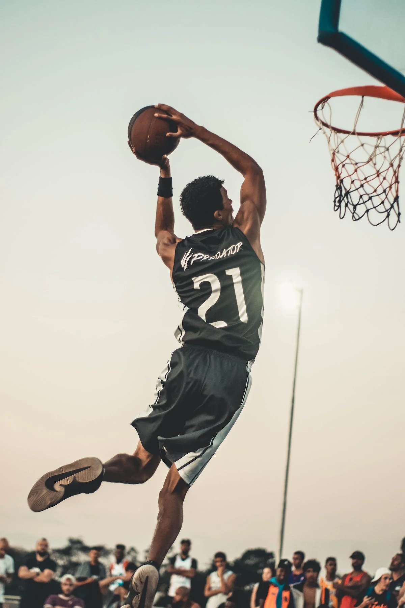
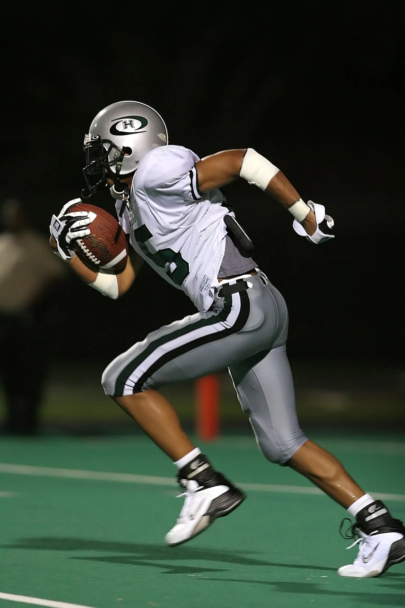
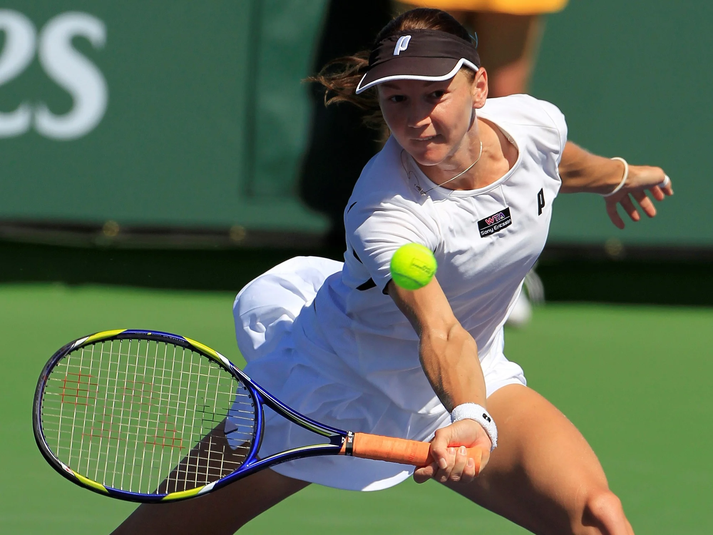
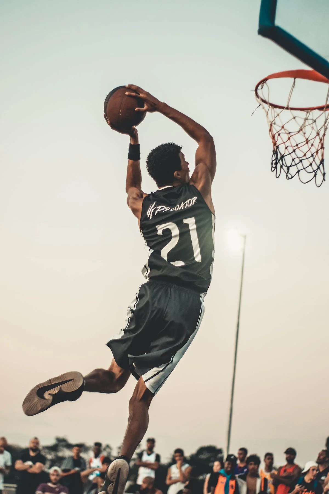
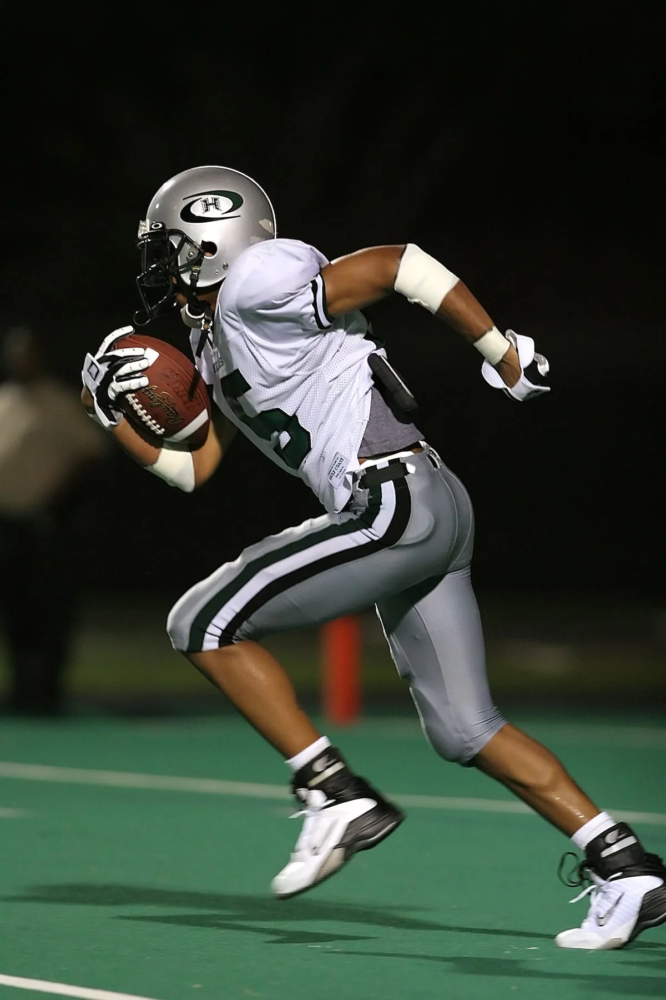
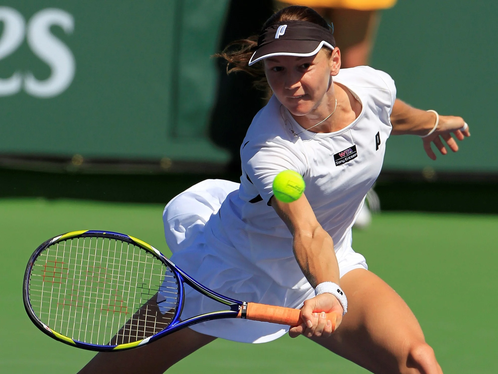

|  |  |  |
 |  |
|---|
|  |  | |
 | |
|---|
REGÍSTRATE
Carlos Sansores es un taekwondoin de 25 años que ha participado en varias competencias internacionales. En los Juegos Panamericanos de Lima 2019 ganó la medalla de oro en la categoría de más de 80 kg. También ha participado en varios eventos del Campeonato Mundial de Taekwondo. Este 2023 Carlos representará a México en los XXIV Juegos Centroamericanos y del Caribe que se llevarán a cabo en San Salvador.
Gabriela Agúndez es una clavadista de 22 años que ha tenido una destacada carrera en su disciplina. En los Juegos Panamericanos de Lima 2019 ganó la medalla de oro en la prueba de plataforma de 10 metros. Además, ha participado en varias competencias del Campeonato Mundial de Natación FINA. Agúndez también participará en los Juegos Olímpicos de París 2024.
Luis Avilés es un corredor de 400 metros, quien a sus 20 años ya ha logrado una exitosa carrera. En los Juegos Centroamericanos y del Caribe de Barranquilla 2018 ganó la medalla de plata en la prueba de 4x400 metros, también ha participado en varios eventos del Campeonato Mundial de Atletismo. Se espera que Avilés tenga una destacada actuación en la prueba individual de 400 metros, en las próximas olimpiadas.